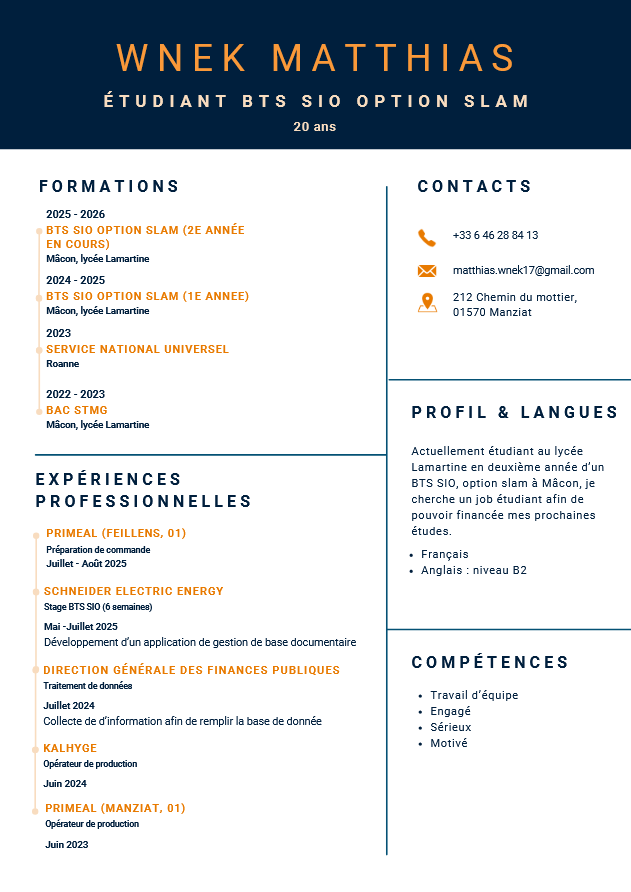

Étudiant en 2ème année de BTS SIO SLAM passionné par le développement web.
Futur développeur freelance & créateur d'applications métiers.
Je m'appelle Wnek Matthias et je suis actuellement en formation de BTS Services Informatiques aux Organisations, spécialité SLAM (Solutions Logicielles et Applications Métiers), au sein du lycée Lamartine situé à Mâcon.
Ce portfolio professionnel a été élaboré dans le cadre de l'épreuve E4 « Support et mise à disposition de services informatiques ». Il regroupe l'ensemble des projets menés durant ma formation ainsi que les missions réalisées lors de mes périodes de stage.
Au fil de ces expériences, j'ai acquis des compétences solides en développement d'applications web, en administration de bases de données, ainsi qu'en gestion de projets informatiques. Mon projet professionnel est de me spécialiser dans le développement web et, à terme, de me lancer en freelance.
Aperçu et téléchargement de mon curriculum vitae.

Mon CV récapitule mon parcours de formation, mes stages, mes compétences techniques et mes projets BTS SIO SLAM. Disponible en PDF, prêt pour toute candidature.
Cliquez sur un stage pour voir le détail complet des missions.
Intégration à la Direction des Services Informatiques. Maintenance d'applications C#, gestion de tickets et documentation technique.
Développement de sites vitrines et applications métiers pour des clients locaux. Full-stack PHP/Laravel + intégration front-end.
Cliquez sur un projet pour voir toutes les informations détaillées.
Application C# de gestion du planning des matchs et résultats du championnat de Ligue de Football Professionnel en C#.
Application web affichant les informations des club ainsi qu'un système de création de compte et authentification
Application C# de gestion d'agence ADA, création et suppression d’un client et visualisation de tous les contrats de location
Application web de visualisations des informations de l'agence, création d'un compte client et réservation de location en temps que client.
Sujet : Intelligence Artificielle appliquée au développement web.
Ma veille porte sur l'intégration de l'IA générative dans les pratiques de développement web. J'observe l'émergence d'outils comme GitHub Copilot, ChatGPT ou les LLM open-source dans les workflows de développement — une thématique au cœur des transformations actuelles du métier.
// outils de veille utilisés
Disponible pour un stage, une alternance ou un projet freelance.
// Envoyer un message
J'ai intégré la Direction des Services Informatiques de la Mairie de Mâcon, une équipe de 4 techniciens gérant l'ensemble du parc informatique de la collectivité (environ 200 postes). Ma mission principale consistait à participer à la maintenance et à l'évolution d'une application de gestion administrative développée en C# sous Visual Studio, ainsi qu'à assurer une partie du support utilisateur.
Ce premier stage m'a permis de découvrir le contexte d'une DSI en collectivité et de mettre en pratique mes acquis en C#. Travailler sur un code existant et s'adapter aux contraintes d'un environnement de production m'a beaucoup appris sur la rigueur nécessaire en milieu professionnel.
J'ai rejoint l'Agence Web Nexys, une agence de 8 personnes spécialisée dans la création de sites web et d'applications métiers pour des PME et associations locales. Mes missions portaient sur le développement full-stack : intégration HTML/CSS/JS et développement back-end en PHP avec Laravel.
Ce second stage a confirmé mon souhait de travailler dans le développement web. Travailler en agence m'a appris à gérer plusieurs projets simultanément, à respecter les délais clients et à utiliser Git en équipe de manière professionnelle.
La société de services informatiques a été retenue comme prestataire pour développer et maintenir les applications de la LFP (Ligue de Football Professionnel). Le projet porte sur la gestion du calendrier des rencontres et des résultats du championnat de Ligue 1, ainsi que leur diffusion sur internet.
User story n°1 : Classement des clubs à l'issue de la dernière journée — affichage selon les points et la différence de buts.
User story n°2 : Visualisation et modification des informations d'un club — consultation et mise à jour des données.
User story n°4 : Ajout d'une rencontre dans le calendrier — saisie d'un nouveau match avec date, heure et sélection des deux clubs disponibles.
La LFP (Ligue de Football Professionnel) souhaitait développer son site internet afin de permettre aux internautes de visualiser tous les clubs, les rencontres et les scores, et d'inscrire leurs commentaires. Ce site assure la diffusion en ligne des informations du championnat de Ligue 1.
User story n°2 : Affichage des informations d'un club — consultation de la fiche détaillée de chaque club.
User story n°4 : Création d'un compte — inscription des internautes avec formulaire dédié.
User story n°5 : Authentification — connexion sécurisée des utilisateurs inscrits.
Une entreprise multi-sites souhaitait remplacer sa gestion des incidents par email par une application web de ticketing centralisée. L'objectif était de permettre aux employés de soumettre des tickets d'incident et aux techniciens de les traiter avec un suivi complet.
Une PME de 80 salariés cherchait à centraliser la gestion RH dans un tableau de bord intuitif. Le DRH souhaitait suivre en temps réel les congés, absences, formations et évaluer les performances par équipe, sans passer par des tableurs Excel.